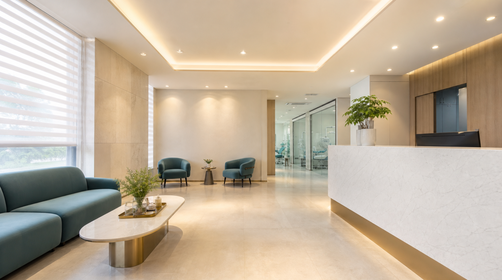
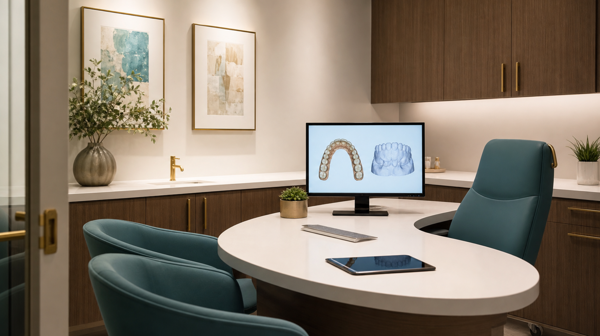
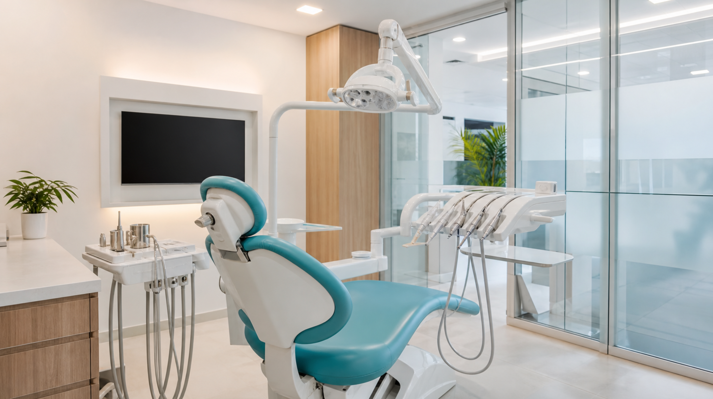
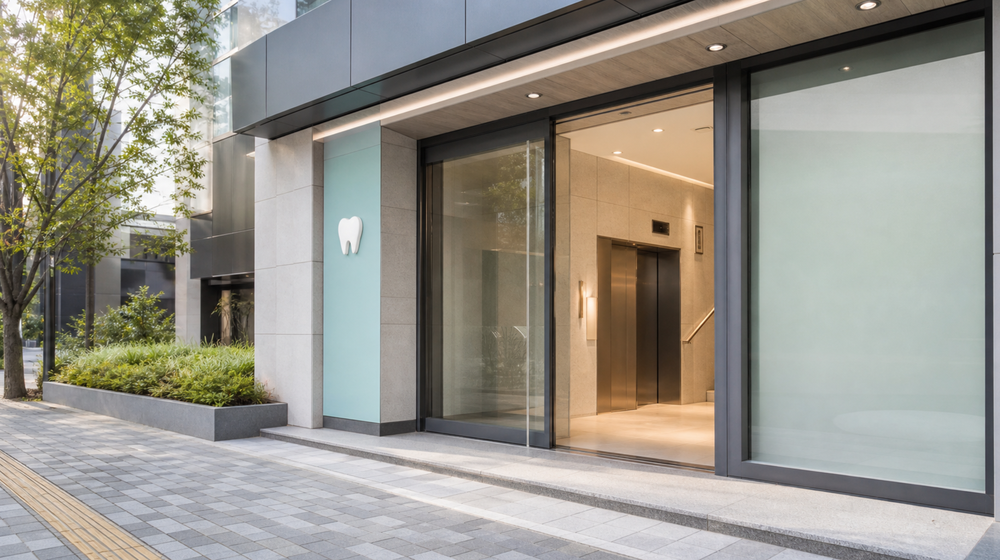

토요일 10:00 - 14:00
Quick Reservation
빠른 예약 상담
Clinic Intro
치료의 기준을 높이는 프리미엄 진료 시스템
충분한 상담, 정밀 검사, 투명한 치료 계획을 통해 환자가 납득할 수 있는 치과 진료를 제공합니다.
- 1:1 맞춤 진료 계획
- 과잉진료 없는 설명 중심 상담
- 멸균 관리와 독립 진료 공간
Clinic Space
사진으로 확인하는 진료 공간
대기부터 상담, 진료까지 이어지는 동선을 실제 공간 사진으로 확인하세요.




Treatments
진료 과목
Doctors
의료진 소개
대표원장
김도윤
임플란트 · 보철전문의
이서연
교정 · 심미치료원장
박지훈
보존 · 일반진료Before / After
치료 사례
BEFORE
AFTER
심미 보철
치아 형태와 색 조화를 고려한 보철 치료 사례입니다.
BEFORE
AFTER
치아 미백
치아 색상 개선을 목표로 진행한 미백 관리 사례입니다.
BEFORE
AFTER
앞니 레진
앞니 일부 손상 부위를 자연스럽게 보완한 치료 사례입니다.
개인에 따라 결과가 다를 수 있습니다.
Equipment
진단부터 위생까지 한 번에 확인되는 정밀 장비
눈에 보이지 않는 구조까지 확인하고, 필요한 치료만 선명하게 설명하기 위해 디지털 진단 장비와 표준 멸균 시스템을 함께 운영합니다.
3D입체 진단
Digital구강 스캔
Sterile멸균 관리
01 Diagnostic
3D CT
구강 구조를 입체적으로 분석해 치료 계획의 정확도를 높입니다.
02 Digital Scan
구강 스캐너
편안하고 빠른 디지털 인상 채득을 지원합니다.
03 Sterilization
멸균 시스템
진료 기구별 표준화된 멸균 프로세스를 운영합니다.
Review
환자 후기
상담부터 치료 과정까지 자세히 설명해 주셔서 안심하고 치료받았습니다.
임플란트 치료 환자병원이 조용하고 쾌적해서 치과에 대한 부담이 줄었습니다.
심미보철 치료 환자예약과 진료 동선이 체계적이라 대기 시간이 짧았습니다.
일반진료 환자CT 촬영 후 설명을 화면으로 같이 보니 치료가 왜 필요한지 이해하기 쉬웠습니다.
신경치료 상담 환자스케일링도 꼼꼼하게 해주시고 관리 방법까지 알려주셔서 만족스러웠습니다.
스케일링 환자아이 진료 때문에 걱정했는데 차분하게 진행해 주셔서 다음 예약도 편하게 잡았습니다.
소아 동반 보호자교정 상담에서 기간과 장단점을 명확히 비교해 주셔서 결정하는 데 도움이 됐습니다.
교정 상담 환자통증에 민감한 편인데 중간중간 상태를 확인해 주셔서 부담이 줄었습니다.
충치치료 환자접수부터 진료 후 안내까지 깔끔해서 처음 방문인데도 동선이 어렵지 않았습니다.
첫 방문 환자FAQ
자주 묻는 질문
문진표 작성 후 구강 상태 확인, 필요한 촬영, 의료진 상담 순서로 진행됩니다.
검사 범위에 따라 다르지만 보통 진단과 상담을 포함해 30분에서 1시간 정도 소요됩니다.
요일별 진료 시간이 다를 수 있어 방문 전 전화 또는 예약 상담으로 확인해 주세요.
방문은 가능하지만 대기 시간이 생길 수 있어 사전 예약을 권장합니다.
검진 후 필요한 치료 범위와 항목별 비용을 설명드린 뒤 계획을 안내합니다.
Location
오시는 길
- 진료시간 평일 10:00 - 19:00 · 토요일 10:00 - 14:00
- 주소 서울특별시 강남구 테헤란로 100 프라임메디컬 5층
- 전화번호 02-0000-0000
- 주차 안내 건물 지하 주차장 이용 가능 · 진료 시 주차 등록을 도와드립니다.